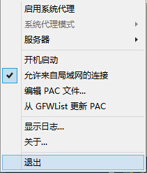

影梭 Shadowsocks
PSV/PS4/PS3使用Shadowsocks教程
用Shadowsocks改善PSV/PS4/PS3联机对战体验&加快PSN下载速度

PSV/PS4/PS3
一、首先需要配置好电脑端的shadowsocks，并保证可以正常访问外网。教程：
http://www.mae5.com/help.html
shadowsocks客户端配置好后，还需要购买账号
二、电脑端设置好后，右键托盘小飞机, 选择允许来自局域网的链接。
这里你可以不用打开"启用系统代理", 这个只对IE有效. Chrome+SwitchyOmega无需打开。

三、接下来在PSV上设定(PS3/PS4同理)。
1、进入WIFI详细设置后打开"Proxy服务器"

2、填写你电脑的内网IP地址, 如果不懂, 可以在 运行 里输入CMD, 接下来输入ipconfig, 这样就知道了
3、接下来Port请写上1080, 或者其他你自己修改过的端口数字
4、最后确认OK就行了
5、另外, 嫌3DS/WiiU下载慢联机卡也可以这么做..至于XBOX ONE/XBOX 360, 软粉都说在国内XBOX LIVE满速..那估计也不需要这玩意了